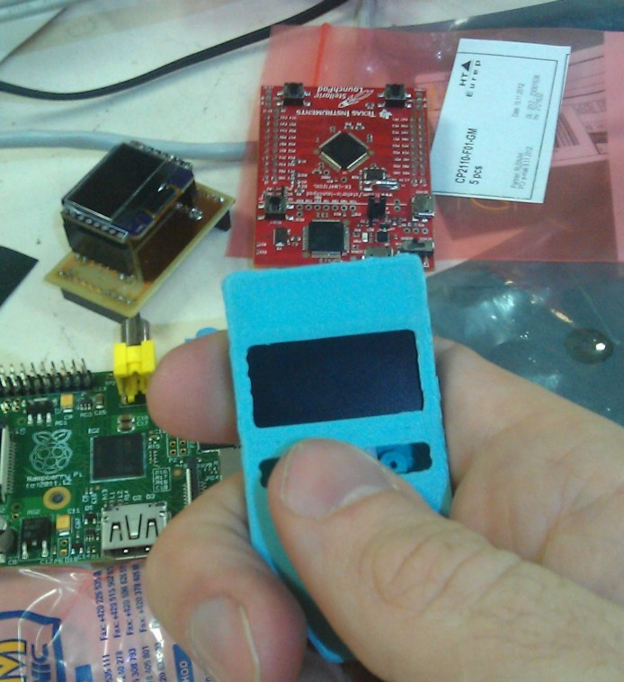

Security vs Convinience
In this rushed world, people have generally chosen the smallest amount of convenience over security. Here’s why you should rethink your decisions for both crypto and real life
It doesn’t matter how secure your wallet is, how encrypted your accounts are, how long your passwords are, how many MFA methods you have or how you hide your seed phrase, you are still vulnerable to the biggest weakness no one can escape: the human.
There’s a thing called the “$5 wrench attack”. Originally a comic by xkcd, It’s been gaining popularity especially now in the “age of crypto”. The comic goes as follows:

It implies a similar message to my first paragraph, where no matter how secure you are from digital attacks, the human factor is the most important link.
Security is arguably the most important thing in cryptocurrency, because it is one of the most important things in life. Of course we’d all like to live in a world where all are in harmony and you don’t need to worry about walking home at night, or getting mugged in the street, but unfortunately this is the current world we live in today.
The world has become a place where people prioritize the littlest convenience over the most security, this is mainly due to the fact that people are simply lazy. This is bad, really bad, especially because companies or even regular people aren’t pushing people to stop prioritizing convenience because in their head, It’s not worth it. That is, until they are a victim of an attack and think to themselves what they should have done differently…
I want to show you today how prioritizing security will benefit you both long and short term much more than convenience.
wallets
With more and more dApps popping up, a safer way to store your DeFi funds was necessary, which is when Metamask started integration with both Ledger and Trezor hardware wallets. Users could now use the safest wallets there are with the most convenience.
In 2011 after a conference in Prague, two developers got together to brainstorm a way to securely store bitcoin offline. 2 years later, SatoshiLabs was founded and they managed to crowd-fund enough to start the production of the trezor one

By 2016, the number of wallets available for the average user was growing immensely, not only for bitcoin, but also for DeFi which was also growing rapidly at the time. It was then that Metamask was founded and enabled a gateway of new DeFi investors, especially in the Ethereum network.
how secure is secure enough?
I’m just gonna say it already: If you aren’t willing to sacrifice the smallest amount of convenience to protecting yourself, you don’t deserve to “be your own bank”
I made a poll on twitter recently and the majority of people responded they use hot wallets, why? Some had never tried cold wallets, but the majority said the same thing, that it’s “easier to use” or “i need my coins fast” or “you can just download the app and you’re done”.
Here are some other answers from users and arguments against them:
| “Convenience, and because encryption has come so far a cold wallet isn’t really necessary”
Encryption has really come far, your hot wallet will most likely not get hacked, but the problem there is not having the software itself get hacked, it’s what i love most about cold wallets: the seed phrase appearing on screen and typing your seed phrase when importing.
The chance of your computer being compromised with something watching you all the time is WAY higher than you’d think. Same goes for the chance of your keyboard drivers being malware and recording everything you type
4. Compre e Guarde
Se você está procurando um investimento de longo prazo, a melhor estratégia é colocar seus Bitcoin em uma carteira e esquecer.
Se você quer investor para o curto/médio prazo, uma estratégia bem comum é a DCA, ou “Dollar Cost Average”, que é você comprar todo dia/semana/mês uma certa quantia, assim mesmo se o mercado abaixar, seu preço de compra médio pode estar mais baixo.
Se você está usando a Binance, recomendo acumular ao menos ~R$1000 para valer a pena retirar para a sua carteira considerando a taxa alta de retiragem de moedas.
Quando recebendo Bitcoin de outra pessoa ou até de você mesmo de uma outra carteira, sempre use um endereço de depósito, assegurando privacidade máxima.
Conclusão
Agora que você é um expert no mundo do Bitcoin, está pronto para usar e espalhar a palavra. Se você quiser, apoie-nos usando esse link para se resgistrar na Binance, assim você também garante um desconto de 10% nas suas taxas por trade!